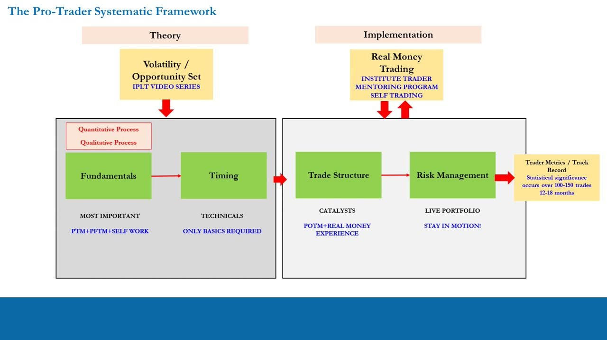
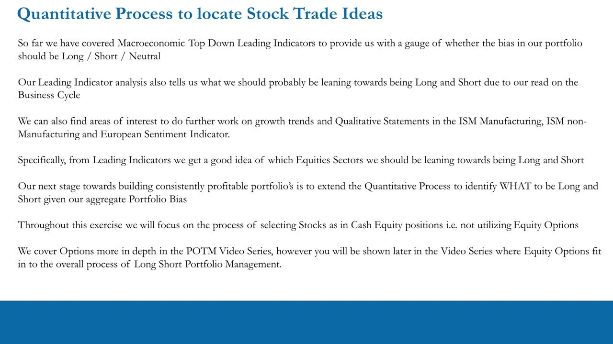
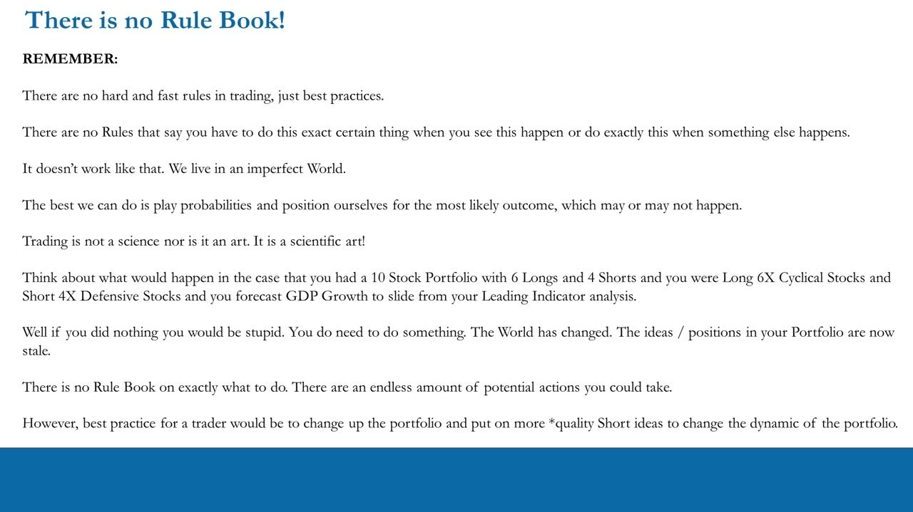
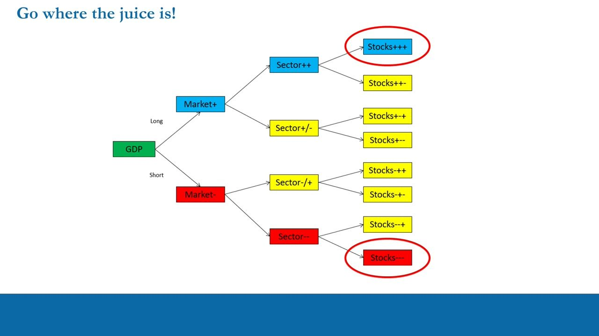
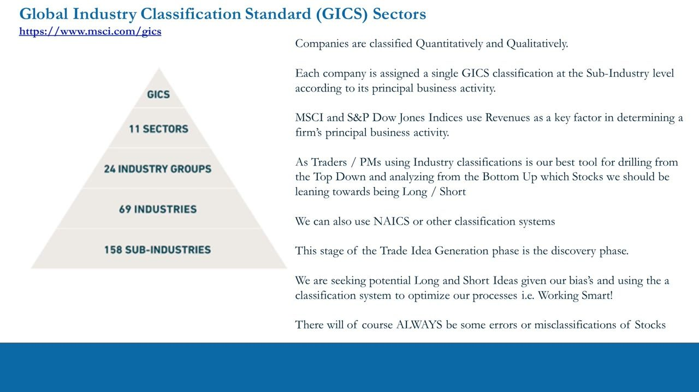
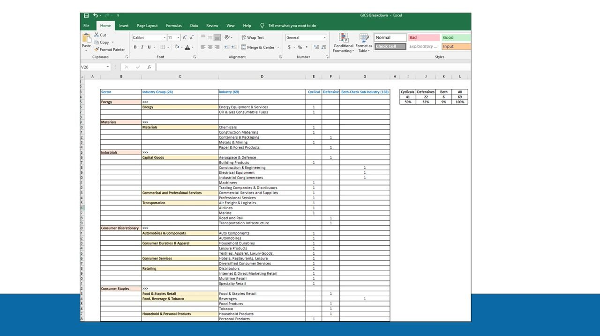
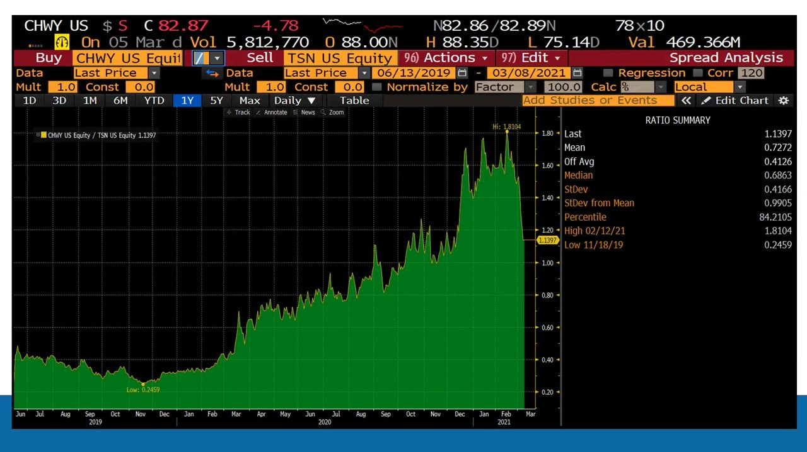
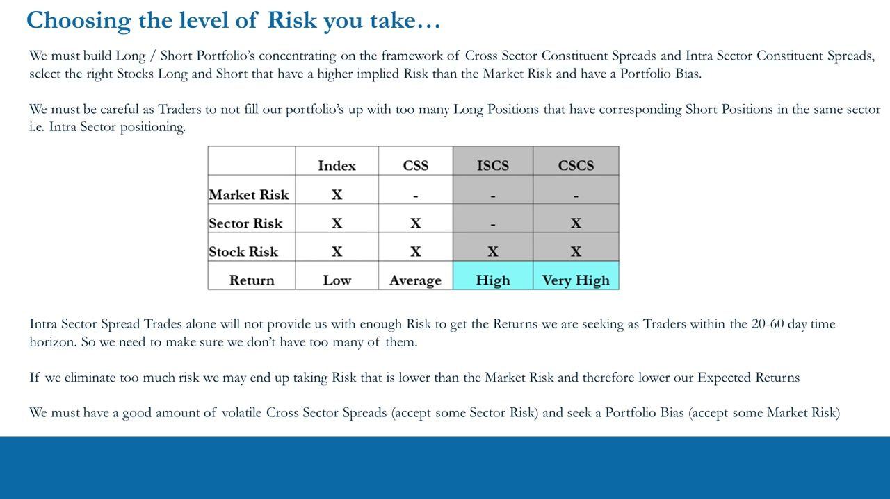
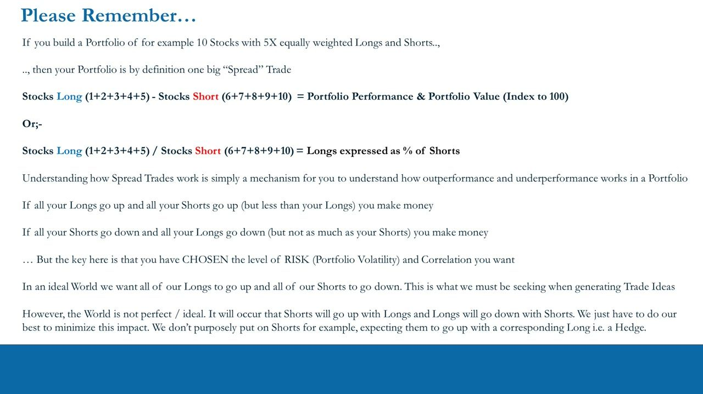

Foundations of Long/Short Portfolio Management 1a
From the macro bias to WHAT to be long and short — the GDP -> Market -> Sector -> Stock drill-down, GICS classification, spread/ratio trades, and consciously choosing your risk
The macro leading-indicator work only set a Long/Short/Neutral bias; this lesson extends the quantitative process to pick the actual longs and shorts — drilling top-down through GICS sectors to the best +++ longs and --- shorts, understanding a portfolio as one big spread trade, and choosing the risk layer (Index / CSS / CSCS / ISCS) each position carries.
The gist
- The top-down macro / leading-indicator work is done: it gave us a Long / Short / Neutral portfolio bias and a lean on which equity sectors to be long and short. This lesson extends the quantitative process to identify WHAT to be long and short (cash equities, not options).
- There is no rule book — only best practices. Trading is a 'scientific art': play probabilities, position for the most likely outcome, and re-shape a stale portfolio when the macro view changes (a rigorous discovery process does NOT mean dogmatic positions).
- 'Go where the juice is': drill GDP -> Market -> Sector -> Stock. The best long is a stock that beats the market, its sector AND the other stocks in it (coded +++); the best short underperforms on all three (---). Everything else is un-optimized.
- GICS gives the map: 11 sectors, 24 industry groups, 69 industries, 158 sub-industries. Anton overlays a Cyclical / Defensive descriptor at the industry level — 41 Cyclical (59%), 22 Defensive (32%), 6 Both/undetermined (9%).
- A spread trade = long Stock A, short Stock B, measured two ways: A - B (spread) or A / B (ratio). Convention: the LONG is written first (minuend / numerator), the SHORT is subtracted / is the denominator, so a chart rising left-to-right means the long outperformed.
- A 10-stock, 5-long / 5-short portfolio IS by definition one big spread trade. You consciously CHOOSE the level of risk by trade type: Index (Market+Sector+Stock, Low return), CSS, CSCS (Very High), ISCS (High) — don't over-use ISCS or you strip too much risk and fall below market returns.
Where we are: the Pro-Trader Systematic Process
- The framework splits into THEORY (the work) and IMPLEMENTATION (real-money positions), underpinned by a Quantitative and a Qualitative Process.
- Flow: Fundamentals (MOST IMPORTANT; PTM+PFTM+self work) -> Timing (Technicals; only basics required) -> Trade Structure (Catalysts; POTM+real-money experience) -> Risk Management (Live Portfolio; 'Stay in Motion!').
- The loop closes on Trader Metrics / Track Record, where statistical significance occurs over 100-150 trades / 12-18 months.
- Theory input = Volatility / Opportunity Set (the IPLT series); Implementation is driven by Real-Money Trading (Institute Trader Mentoring Program / Self Trading).
Anton re-draws the master picture to locate exactly where the course now sits: the theory's quantitative macro leg is done, so the next step is extending the quantitative process to select the specific longs and shorts.

Extending the quantitative process to pick stocks
- The macro top-down leading indicators gave us (a) whether the portfolio bias should be Long / Short / Neutral and (b) which equity SECTORS to lean long and short, based on our read of the business cycle.
- ISM Manufacturing, ISM non-Manufacturing and the European Sentiment Indicator flag areas of interest for further work on growth trends and qualitative statements.
- The next stage extends the Quantitative Process to identify WHAT to be long and short given the aggregate portfolio bias.
- Focus throughout: selecting stocks as cash-equity positions (not equity options). Options are covered in the POTM series; you will later be shown where options fit into Long/Short Portfolio Management.

There is no rule book
- There are no hard-and-fast rules in trading, only best practices. Trading is not a science nor an art — it is a 'scientific art'.
- The best we can do is play probabilities and position for the most likely outcome, which may or may not happen.
- Worked scenario: a 10-stock portfolio with 6 longs / 4 shorts, long 6x Cyclical stocks and short 4x Defensive stocks — then your leading indicators forecast GDP growth to slide.
- Doing nothing would be stupid: the world has changed and the positions are now stale. Best practice is to reshape the book and add more quality SHORT ideas to change its dynamic.
- A rigorous, systematic idea-generation process does NOT mean dogmatic positions — once ideas become live positions you stay flexible.

Go where the juice is: GDP -> Market -> Sector -> Stock
- The discovery phase is a left-to-right decision tree: GDP -> Market (+/-) -> Sector (++ / +- / -+ / --) -> Stocks (a three-sign code).
- Each sign is that item's performance vs the level above it. The best LONG beats the market, beats its sector AND beats the other stocks in the sector -> coded +++ (circled).
- The best SHORT underperforms the market, its sector AND the other stocks in it -> coded --- (circled).
- Everything yellow is un-optimized: ++- = right sector but wrong stock (lagged its peers); --+ = right short sector/market call but the least-bad (wrong) stock.
- For longs: be in sectors leading the market, long stocks leading the sector. For shorts: sectors lagging the market, short the stocks falling most. Stocks act as the proxy for the sector — no actual sector-product positions needed at this stage.
Because the mandate is absolute return, we want outsized gains, so we drill past the index and optimize at every level — 'go where the juice is.'

GICS: the classification map
- The Global Industry Classification Standard (MSCI / S&P Dow Jones) is a pyramid: GICS -> 11 SECTORS -> 24 INDUSTRY GROUPS -> 69 INDUSTRIES -> 158 SUB-INDUSTRIES.
- The 11 sectors: Energy, Materials, Industrials, Consumer Discretionary, Consumer Staples, Health Care, Financials, Information Technology, Communication Services, Utilities, Real Estate.
- Each company is assigned a SINGLE GICS classification at the sub-industry level by its principal business activity; MSCI/S&P use Revenues as the key factor.
- For traders/PMs, industry classification is the best tool for drilling top-down and analysing bottom-up which stocks to lean long/short — the discovery phase of trade-idea generation. NAICS or other systems can also be used.
- There will ALWAYS be some errors or misclassifications of stocks.

Overlaying Cyclical vs Defensive descriptors
- Anton overlays a Cyclical / Defensive descriptor onto the 69 GICS industries in a spreadsheet (checking the 158 sub-industries where an industry is ambiguous).
- Result: Cyclicals 41 (59%), Defensives 22 (32%), Both/undetermined 6 (9%) — 69 industries = 100%.
- The 6 undetermined industries must be resolved by looking at the sub-industries and the individual stocks; overlaying a Cyclical/Defensive label on any classification always runs into this. It comes down to common sense and attention to detail.
- GICS has an annual review and is always changing, so spreadsheets must be updated regularly. A defensive stock can also get lumped into a cyclical sector — the classification is subjective, derived from how a company makes its money.
- Later in the PTM the same descriptors will be assigned to NAICS data yourself.
The classification is a prism/lens through which to view the market and optimize efficient returns — not a rulebook. With a net-long bias to be long Cyclicals, the goal is the RIGHT cyclicals (good stocks for that moment), while shorting bad cyclicals and/or bad defensives, and even being long some good defensives. First identify all companies with good fundamentals (potential longs) and bad fundamentals (potential shorts) — the positive and negative outliers in each sector — and run an inventory of ideas.

Spread and ratio trades
- A spread trade = long one stock (A) and short another (B). The relationship is computed two ways: (1) A - B (a spread trade), or (2) A / B (a ratio trade). Both are loosely called 'spread trades' in vernacular.
- Convention: the stock you want to go LONG is written first (minuend / numerator); the stock you want to SHORT is subtracted / is the denominator. So a chart rising left-to-right means the long outperformed the short.
- Worked example — CHWY Chewy (buy, online pet-supply retailer) vs TSN Tyson Foods (sell, meat distributor), since Chewy's IPO in June 2019: Spread = $82.87 - $72.71 = $10.16; Ratio = $82.87 / $72.71 = 1.1397.
- Bloomberg ratio panel: Last 1.1397, Mean 0.7272, Off-Avg 0.4126, Median 0.6863, StDev 0.4166, ~0.99 StDev from mean, 84.2 percentile, High 1.8104 (12 Feb 2021), Low 0.2459 (18 Nov 2019) — a stretched, mean-reversion read.
- % performance (equal weight, minus method): CHWY = ($76.33 - $22)/$22 x 100 = 247%; TSN = ($73.69 - $62.76)/$62.76 x 100 = 17.4%; CHWY outperformed TSN by 247% - 17.4% = 229.6%.
The point is the concept of performance — one stock (or basket) outperforming another — which is the mechanism for understanding how a whole long/short portfolio works.

Choosing the level of risk: Index / CSS / CSCS / ISCS
- The market decomposes into three risk layers: Market risk (macro/GDP, moves the whole market), Sector risk (a dynamic hitting one sector), and Stock / unique risk (specific to one company). The implied market risk of the S&P 500 at any time is the VIX.
- Long/Short the Index (Market): carries Market + Sector + Stock risk -> LOW return.
- CSS (Cross Sector Spread): long one sector vs short another (sector ETFs) -> no market risk; keeps Sector + Stock -> AVERAGE return.
- CSCS (Cross Sector Constituent Spread): long a stock in one sector vs short a stock in a DIFFERENT sector -> no market risk; keeps Sector + Stock -> VERY HIGH return.
- ISCS (Intra Sector Constituent Spread): long and short two stocks in the SAME sector -> no market and no sector risk; isolates Stock risk -> HIGH return.
- Rule: don't fill the book with too many ISCS trades — they eliminate too much risk and can drop portfolio risk BELOW market risk, cutting expected returns. Keep a good amount of volatile cross-sector spreads (accept some sector risk) and take a portfolio bias (accept some market risk). Risk elimination assumes correct beta / correlation (beta-hedged) weightings.
We want to make money whether the index rises or falls and do NOT benchmark against index performance — and if the market is up in a quarter we aim to make a lot more than simply being long the index would have paid.

The whole portfolio IS one big spread trade
- A portfolio of, say, 10 stocks with 5x equally-weighted longs and shorts is by definition one big 'spread' trade.
- Stocks Long (1+2+3+4+5) - Stocks Short (6+7+8+9+10) = Portfolio Performance & Value (indexed to 100). Or Longs / Shorts = longs expressed as a % of shorts.
- You make money if all longs rise and all shorts rise less; or if all shorts fall and all longs fall less.
- The key: you have CHOSEN the level of RISK (portfolio volatility) and correlation you want.
- Ideal world = all longs up, all shorts down; that is what to seek when generating ideas. In reality shorts will sometimes rise with longs and longs fall with shorts — minimise the impact, but never put on a short EXPECTING it to rise with a corresponding long (that would be a hedge).

Glossary
- GICSGlobal Industry Classification Standard (MSCI / S&P Dow Jones): 11 sectors, 24 industry groups, 69 industries, 158 sub-industries. Each company gets one classification at the sub-industry level by principal business activity (Revenues as key factor).
- Cyclical / Defensive descriptorA label Anton overlays on the 69 GICS industries: 41 Cyclical (59%), 22 Defensive (32%), 6 Both/undetermined (9%). Subjective, annually reviewed, resolved for ambiguous cases at the sub-industry / stock level.
- Go where the juice isThe GDP -> Market -> Sector -> Stock top-down funnel. Best long = a stock beating the market, its sector and its peers (+++); best short = one losing on all three (---); anything else is un-optimized.
- Spread tradeLong Stock A, short Stock B, computed as A - B. Convention: the long is written first (minuend); a chart rising left-to-right = the long outperformed.
- Ratio tradeThe same pair computed as A / B (long = numerator, short = denominator). A directional out/under-performance gauge; both A-B and A/B are loosely called 'spread trades'.
- Market / Sector / Stock (unique) riskThe three risk layers of the market: macro/GDP-driven market risk, a dynamic hitting one sector, and company-specific stock risk. The VIX is the implied market risk of the S&P 500.
- CSSCross Sector Spread: long one sector vs short another (sector ETFs). Beta-hedged -> no market risk; keeps sector + stock risk -> Average return.
- CSCSCross Sector Constituent Spread: long a stock in one sector vs short a stock in a different sector. No market risk; keeps sector + stock risk -> Very High return.
- ISCSIntra Sector Constituent Spread: long and short two stocks in the same sector. No market and no sector risk; isolates stock risk -> High return. Don't over-use it or you fall below market returns.
- Scientific artAnton's framing of trading: neither pure science nor pure art. There is no rule book — you play probabilities and position for the most likely outcome.